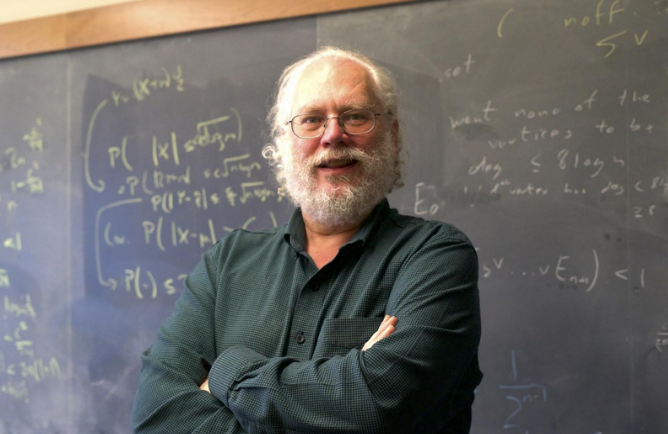

El algoritmo de Shor: 1994
El algoritmo de Shor, que recibe su nombre por el matemático americano Peter Shor, es un procedimiento informático que permite descomponer un número grande en factores primos (2, 3, 5, 7, 11...) para operar con él de forma más rápida y ahorrar en tiempo y espacio computacional. Por el momento, los ordenadores cuánticos (que utiliza más que 0 y 1) no son lo bastante potentes para utilizar este algoritmo con claves de cifrado del número real. De hecho el mayor número factorizado hasta la fecha es el 21. Este algoritmo es el más rápido y conveniente para factorizar números, pero debemos esperar a que la ciencia computacional avance para que pueda llevarse a cabo. Esto demuestra que, en ocasiones, el conocimiento avanza más rápido que la tecnología.
Volver a la página principal